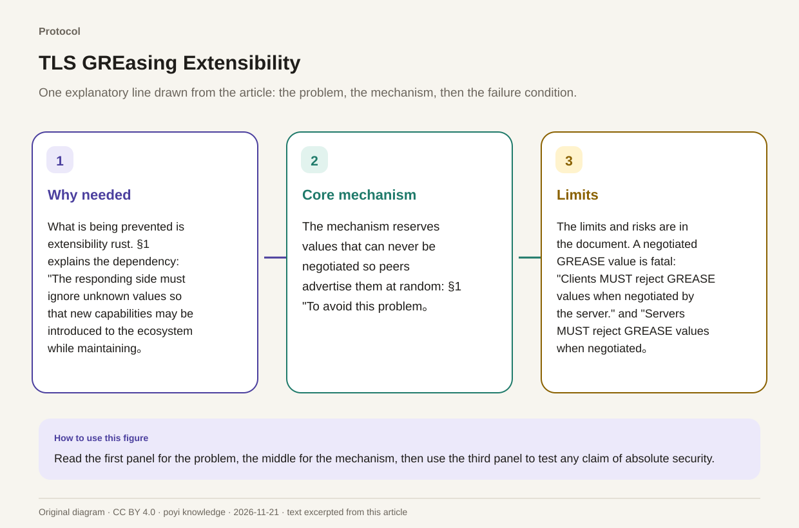
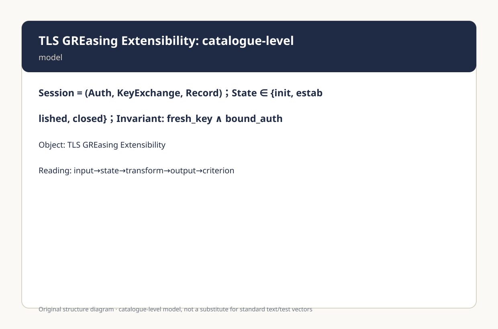

Principles
Protocol: TLS GREasing Extensibility (TLS GREasing 扩展性保活). The mechanism reserves values that can never be negotiated so peers advertise them at random: §1 "To avoid this problem, this document reserves some currently unused values for TLS implementations to advertise at random." and explains that tolerant peers ignore them while intolerant ones fail fast — "Peers that do not tolerate unknown values will fail to interoperate, revealing the mistake before it is widespread." §2 lists paired repeated-byte values (0x0A0A 0x1A1A 0x2A2A and so on) for extensions, named groups, signature algorithms and versions, while PskKeyExchangeModes get a separate single-byte set: "The following values are reserved as GREASE values for PskKeyExchangeModes: 0x0B 0x2A 0x49 0x68 0x87 0xA6 0xC5 0xE4".

Why it matters
What is being prevented is extensibility rust. §1 explains the dependency: "The responding side must ignore unknown values so that new capabilities may be introduced to the ecosystem while maintaining interoperability." but bugs spread silently: "However, bugs may cause an implementation to reject unknown values." and the consequence is that "updated peers will discover that the metaphorical joint in the protocol has rusted shut and the new values cannot be deployed without interoperability failures." Hence the name: "this technique is called “GREASE” (Generate Random Extensions And Sustain Extensibility)".
Applications
Clients insert GREASE values into the ClientHello (§3.1 lists MAY items for cipher suites, extensions, named groups, signature algorithms, versions, PSK modes and ALPN); servers do the equivalent in CertificateRequest and NewSessionTicket (§4.1). §5 sets the sending policy: "Implementations advertising GREASE values SHOULD select them at random." so that tolerance is not limited to one value, while requiring "Implementations MUST honor protocol specifications when sending GREASE values." and weighing diversity against determinism.

Limits & attacks
The limits and risks are in the document. A negotiated GREASE value is fatal: "Clients MUST reject GREASE values when negotiated by the server." and "Servers MUST reject GREASE values when negotiated by the client." §7 notes the values are never negotiated, so "GREASE values cannot be negotiated, so they do not directly impact the security of TLS connections." but retrying without them weakens the defence — "Implementations SHOULD NOT retry with GREASE disabled on connection failure." — and non-random selection creates a fingerprinting risk.
History
RFC 8701 is signed by D. Benjamin (Google LLC), published January 2020 with Category: Informational. §2 records the side effect of reserving the values: "The values allocated above are thus no longer available for use as TLS or DTLS [RFC6347] version numbers." and the allocation is deliberately thin — "These values were allocated sparsely to discourage server implementations from conditioning on them."
Worked example & verification
Formal model and reproduction steps
[\mathrm{Adv}^{\Pi}_A(\lambda)\le n\cdot\mathrm{Adv}^{\mathrm{prf}}F(\lambda)+\varepsilon{\mathrm{aead}}(\lambda)]
TLS GREasing Extensibility: the registered public parameters, key material or randomness, and message are mapped through the stated transformation to an output checked against the registered criterion. The worked example is a structural reproduction, not a new test vector; parameter ranges, standard versions and implementation details remain source-bound.
References
- Wikipedia search entry for TLS GREasing 扩展性保活. https://zh.wikipedia.org/w/index.php?search=TLS%20GREasing%20%E6%89%A9%E5%B1%95%E6%80%A7%E4%BF%9D%E6%B4%BB
- Handbook of Applied Cryptography (Menezes, van Oorschot, Vanstone). https://www.cacr.math.uwaterloo.ca/hac/